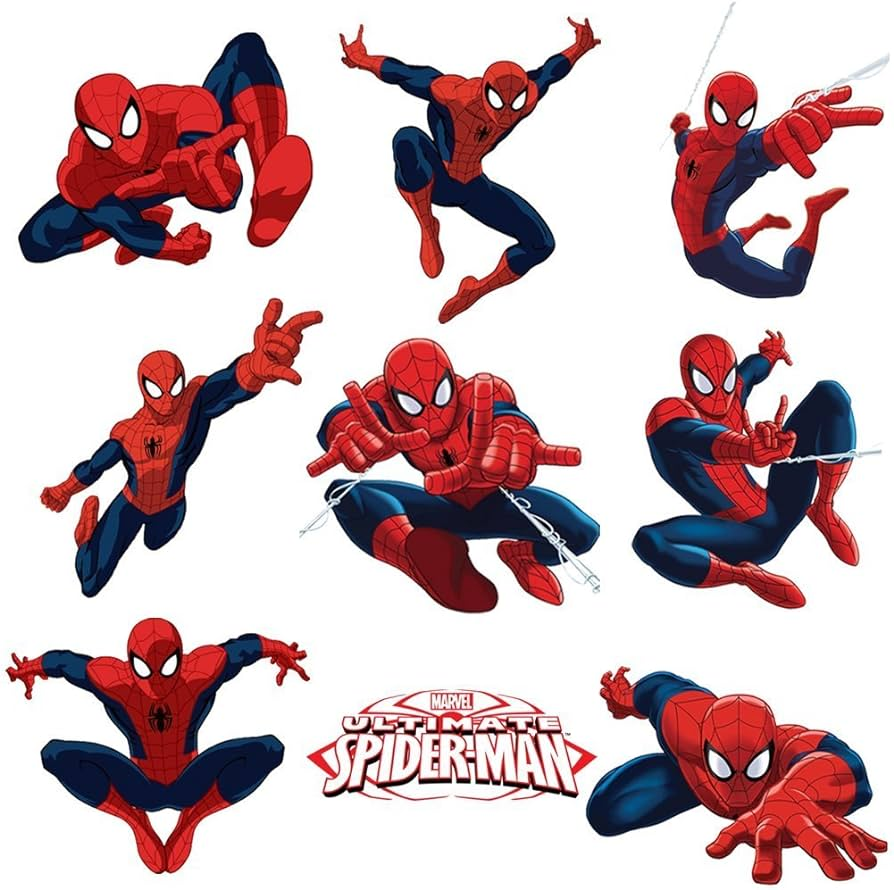
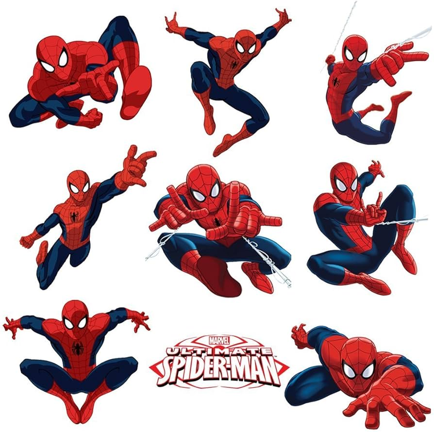

Overview
Spider-Man is a fictional superhero created by writer Stan Lee and artist Steve Ditko. He first appeared in Amazing Fantasy #15 in 1962 and is known for his alias, Peter Parker.

Origin
Peter Parker, a high school student, gained his superpowers when he was bitten by a radioactive spider. This event led to the development of his iconic powers and his journey as a crime-fighting superhero.
Powers and Abilities
Spider-Man possesses superhuman agility, strength, and reflexes. He can stick to walls, has a "spider-sense" that warns him of danger, and is known for his web-slinging abilities using web-shooters he designed himself.
Notable Enemies
Spider-Man has faced numerous villains over the years, including the Green Goblin, Doctor Octopus, Venom, and the Sandman, among others.
Comics
Spider-Man has appeared in a wide range of comic book series published by Marvel Comics, including "The Amazing Spider-Man," "Ultimate Spider-Man," and "Spider-Man: Homecoming."
References

 
